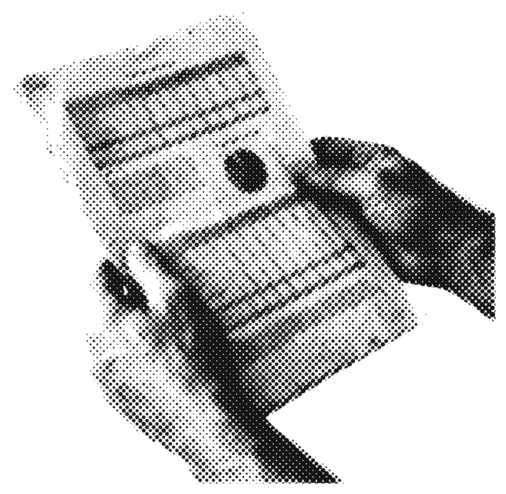
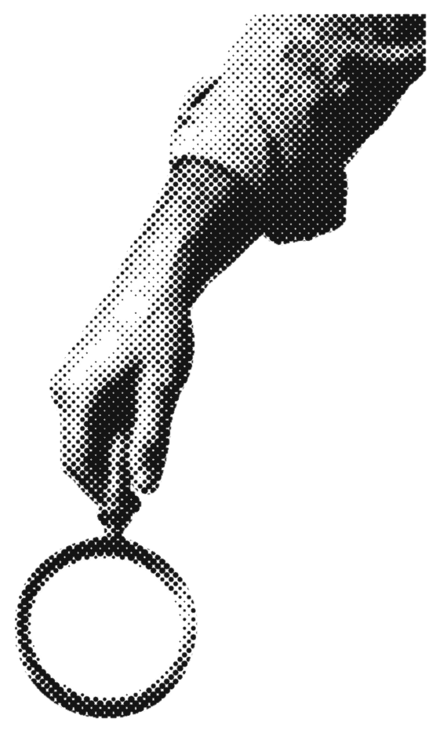

how to check what your fund actually owns (for dummies)
you own the fund. but do you know what's inside it?
most people never look. it takes about 10 minutes.
no finance degree needed, just a pdf and a little curiosity.
here's how, step by step.
1. find the factsheet
search "[your fund's name] factsheet". the fund house publishes one, usually every month.
it's a 1-2 page pdf: what the fund owns, what it costs, how big it is.
own an etf? its website often lists every holding, updated daily.
can't find it? look for "portfolio" or "holdings" on the fund's page.
got it open? good. now read the part most people skip.

@blok.capital

2. read the top 10, then compare
find the "top 10 holdings" table. it's the 10 biggest things your money is actually sitting in.
own two or three funds? put their top 10 lists side by side.
same company names showing up again and again?
you might own the same few companies three times and call it diversified.
that's called overlap. now you can see it.
@blok.capital
3. check the cost and the date
1. find the expense ratio (in india: the ter).
2. turn it into money: 1% of 10,000 is 100 a year.
3. now find the date on the holdings list.
4. us funds: public quarterly, ~60 days later.
5. indian funds: monthly, within 10 days.
6. etfs: often every day.
so most fund lists are a snapshot of the past.
weeks, sometimes months old.
@blok.capital
4. the bit nobody tells you
a fund shows you what it owned.
an on-chain portfolio shows you what you own, right now. every holding sits on a public ledger, in an account only you control. check it live, anytime. no factsheet needed.
that's what we're building at BLOK Capital.
the catch: it's newer tech and prices can swing. start small, learn first.
BLOK Capital
Everyone deserves a Garden.
Your own portfolio, out in the open. Every holding and every move on the record, live, in an account only you control.
See how it works
Educational content only. Not financial advice.
how to invest your money (for dummies)
you can see your fund's statement
receipts beat reports
@blok.capital
save this for the next time you buy a fund. follow @blok.capital
educational content only, not financial or investment advice. on-chain assets can be volatile and you can lose money. images are ai-generated. sources: sec form n-port; sebi mutual fund portfolio disclosure rules (as of oct 2026).